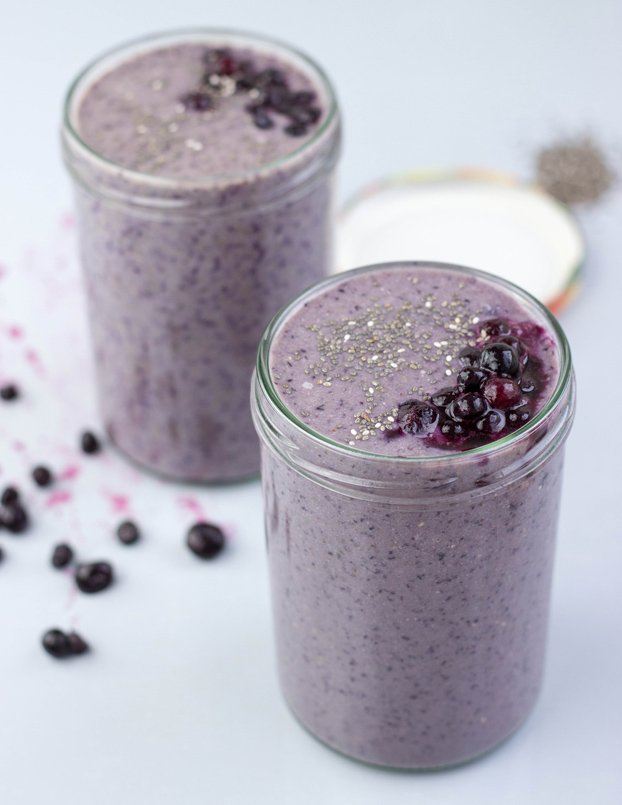

Cinnamon Roll Recipe

The Best Pre or Post Workout Smoothie on the Market
Protein shakes (or protein smoothies) are a protein drink typically consumed before or after a workout in order to aid in muscle recovery. Protein shakes are usually made with frozen fruit/ice, a protein source such as protein powder, and
a liquid.
| Prep Time |
Blend time |
Total Time |
Serves |
| < 5 mins |
2 mins |
10 mins |
1 muscle head |
Ingredients
- 1 cup of Frozen Fruit
- 1 serving of Whey or Plant-based Protein
- 1 cup of Greek Yogurt
- 1 Banana
- 1 serving of CBD oil
How to make a Protein Smoothie in 55 Steps
- Step 1:Start with a base of around 1 cup of ice or 1 cup of frozen fruit. My favorite base is frozen banana, but mixed berries are a close second. Add it right into your high-speed blender.
- Step 2:Next, choose your protein source(s). We typically use multiple protein sources when making a protein shake. For example, you could do a serving of protein powder + a teaspoon of chia/flax seed + a tablespoon of
nut butter.
- Step 4: Now, decide if you’d like to add a sweetener. Depending on how sweet your protein powder is or what base fruit you used, you may not need to add one! If you are going to add one, we suggest an all-natural sweetener
such as maple syrup or honey.
- Step 5: Start with about 1/3 cup to 1/2 cup of liquid and add more from there. There’s nothing worse than a protein shake that’s too runny, so start conservatively. Feel free to use any liquid you like such as water, orange
juice, almond milk, etc.
- Step 6:Now it’s time to blend it all up! The better the blender, the smoother your protein shake is going to be! If things are having a hard time “smoothing,” this means you need to add more liquid.
- Step 7:Serve immediately. Enjoy!